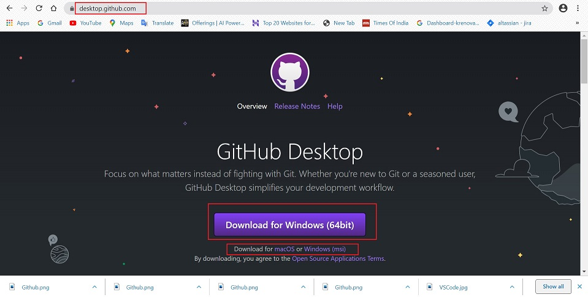
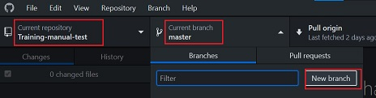
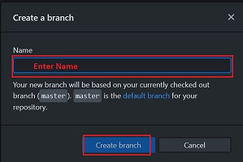

Desktop Github¶
Introduction¶
It's a fast, easy way to contribute to projects from OS X and Windows.
GitHub Desktop is designed to simplify essential steps in your GitHub workflow and replace GitHub for Mac and Windows with a unified experience across both platforms.
GitHub Desktop is an open-source Electron-based GitHub app.
Installing and Authenticaticating to Github Desktop¶
Before you set up GitHub Desktop, you must already have a GitHub account.
Download & Install Desktop GitHub¶
- Go to: https://desktop.github.com/
- Choose Download to

- Click and Run the installer file on your computer.
Authenticating to Github¶
- In the upper-left corner of the window, select the File menu.
- Click Options

- In Options -> Select Accounts

-
In the Accounts pane:
- To authenticate to GitHub, under "GitHub.com" click Sign In.
- Use the Github Username and password.

Configuring Basic Settings¶
-
In the upper left corner:
- File -> Options
- Options -> Accounts: to add or remove a GitHub account
- Options -> Integrations: to pick an external editor or shell.

- Options -> Git: to edit your Git configuration.

- Options -> Appearance: to switch between the light or dark theme.

- Options -> Advanced: for more configuration options.

Cloning a Repository from Github to Github Desktop¶
There are 2 ways to clone repositories:
Use GitHub to clone remote repositories to GitHub Desktop¶
- Sign in to Github and Github Desktop before you start to clone.
- On Github, navigate to the main page of the repository.
- Above the list of files, click "Code".
- Click on "Open with Github Desktop"

- Click "Choose", navigate to local path where you want to clone the repository.
- Click on "Clone"
Cloning in Desktop Github¶
- Click on Current Repository tab
- Click Add -> Clone Repository

- A dialog box will appear with list of repositories you are part of.
- Choose the repository you want to clone.

- In Local Path: choose the location on your system where you want to clone the repository.
- Click Clone

Creating a Branch¶
If you have collaborator permissions on a repository, you can create a branch off of the repository's default branch so you can safely experiment with changes.
- At the top of the app, choose your working repository, in the Current Repository tab.
- Click on Current Branch tab.
- Click on New Branch

- Add name of branch.
- Click on Create branch.

Committing changes to your project¶
GitHub Desktop tracks all changes to all files as you edit them. You can decide how to group the changes to create meaningful commits.
- Select the branch you have made changes to.
-
Select changes to include in a commit
- The red '-' icon indicates removed files.
- The yellow '.' icon indicates modified files.
- The green '+' icon indicates added files.
- To access stashed changes, click Stashed Changes.
- At the bottom of the list of changes, in the Summary field, type a short, meaningful commit message. Optionally, you can add more information about the change in the Description field.
- Under the Description field, click Commit to Branch.

- Click on Push origin
- Click on Create Pull Request: This will send email notification to the reviewer.

Help & Guides¶
To do List¶
To mark the training complete, finish the below tasks:
- Clone a test repository.
- Create a test branch.
- Commit changes made to the branch.
- Do a Pull request on the branch.